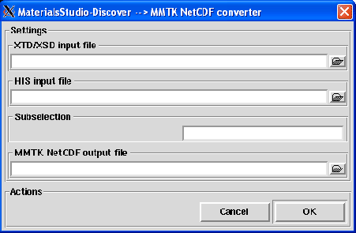

Next: Forcite to MMTK
Up: Trajectory conversion
Previous: DL_POLY to MMTK
Contents
Discover to MMTK
This converter allows the conversion from a trajectory generated with MaterialsStudio Discover module [30] to a
MMTK NetCDF trajectory. Pressing the Discover to MMTK menubutton, the dialog shown in figure 4.8 will pop up.
Figure 4.8:
The Discover to MMTK converter dialog.
|

|
To perform the conversion, the following input fields must be filled:
Next: Forcite to MMTK
Up: Trajectory conversion
Previous: DL_POLY to MMTK
Contents
pellegrini eric
2009-10-06